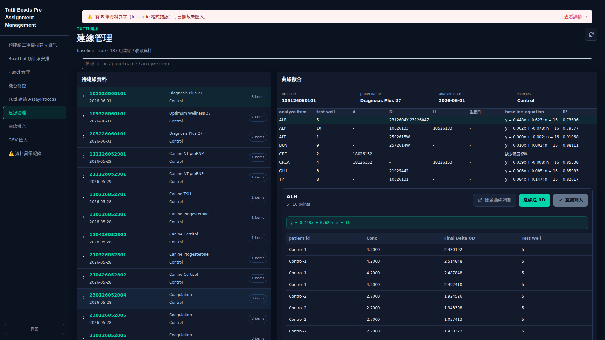
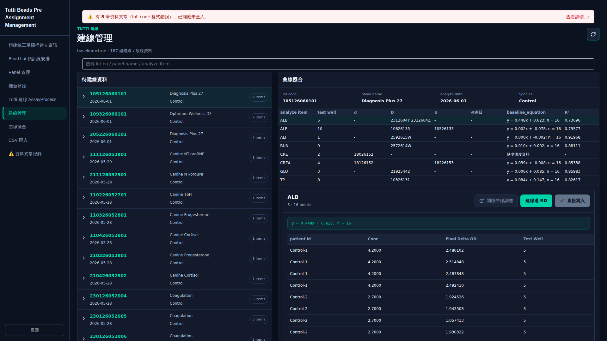
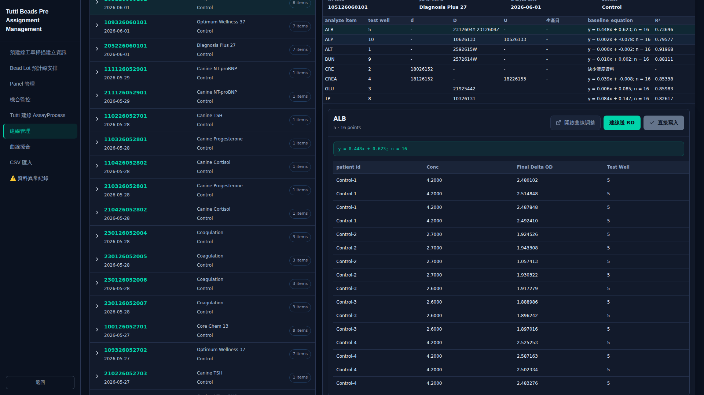
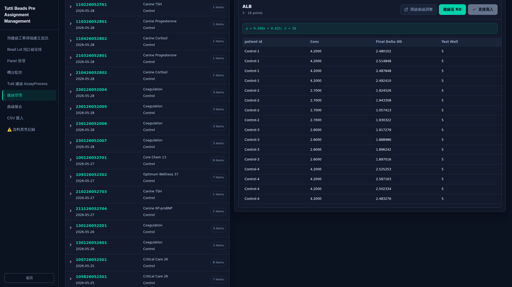
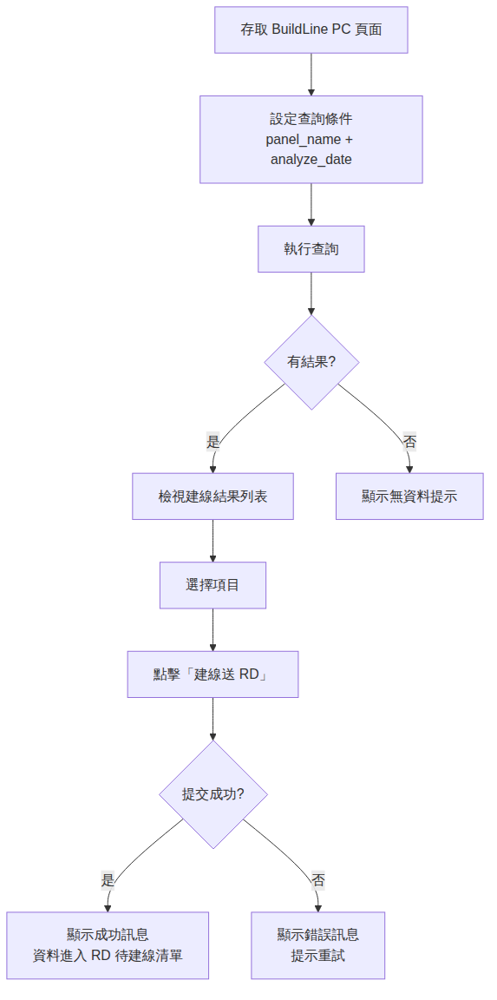

建線管理 PC 端
PC 端建線管理功能提供查詢條件設定、建線結果檢視、以及「建線送 RD」提交操作。操作人員可在電腦上透過設定 Panel 名稱與分析日期進行查詢，檢視建線結果後將資料提交至 RD 待建線清單。
存取網址：https://52-192-28-39.sslip.io/qc-web/pre-assignment/build-lines
操作步驟
-
設定查詢條件（panel_name、analyze_date）
在查詢區域中選擇或輸入 Panel 名稱（panel_name）與分析日期（analyze_date），以篩選欲查詢的建線資料範圍。

-
執行查詢
確認查詢條件後，點擊查詢按鈕執行搜尋，系統將根據設定的條件從資料庫中擷取符合的建線資料。

-
檢視建線結果列表
查詢完成後，畫面將顯示符合條件的建線結果列表，包含各筆資料的 Panel 名稱、分析日期及相關建線資訊。

-
點擊「建線送 RD」將資料提交至 RD 待建線清單
選擇欲提交的建線項目後，點擊「建線送 RD」按鈕，系統將資料送至 RD 待建線清單，等待 RD 人員進行後續建線作業。

操作流程圖

系統回饋
成功
顯示成功訊息，資料進入 RD 待建線清單。
失敗
顯示錯誤訊息，提示重試或檢查網路連線。